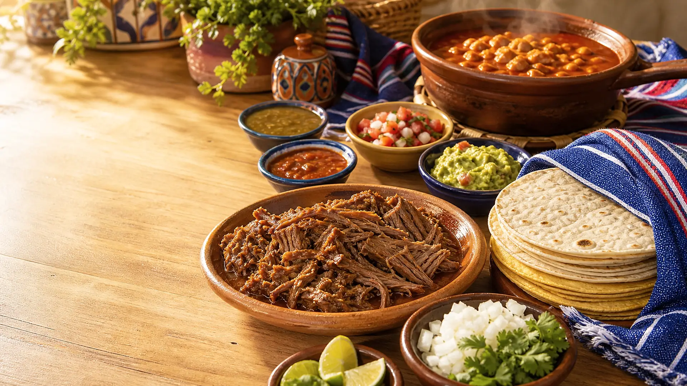
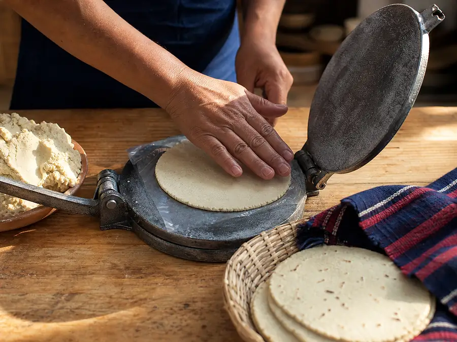
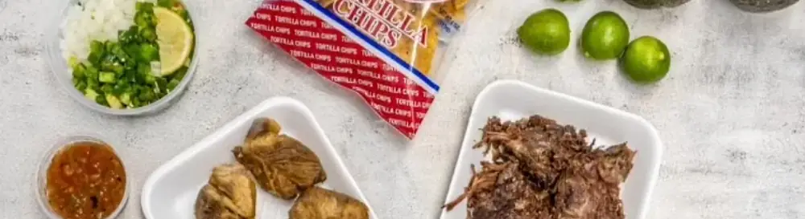

Barbacoa Mixta
Beef cheek and lip, slow cooked
$15.95
Eagle Pass · Family tradition since 1988
Handcrafted tortillas, slow-cooked barbacoa and the flavors our family brought from Piedras Negras.
From our grandparents’ table
Founded by Ana Maria and Beto Morales after immigrating from Piedras Negras, Mexico, the factory still follows generations of care, resilience and family recipes.

The real spread

MondayClosed
Tuesday7am–2pm
WednesdayClosed
Thursday7am–2pm
Friday6am–2pm
Saturday6am–2pm · 8:30pm–5am
Sunday5am–2pm
Come by the factory
340 North Pierce Street
Eagle Pass, TX 78852